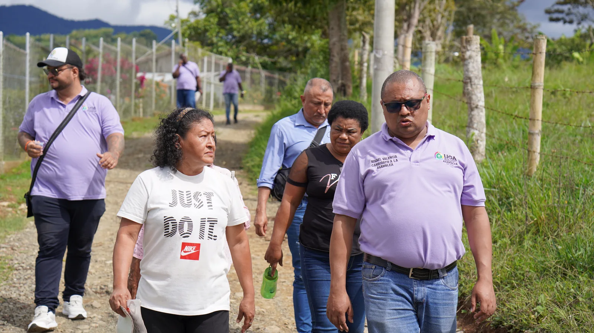

Línea institucionalProyectos Territoriales
Iniciativas orientadas al fortalecimiento de capacidades locales, organización comunitaria, participación ciudadana y construcción de soluciones para el desarrollo territorial.
EnfoqueCapacidades locales y participación ciudadana.
Conocer el enfoque